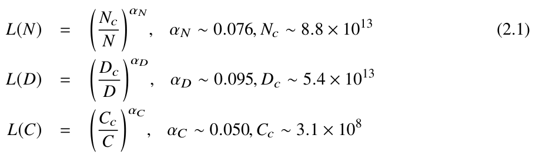
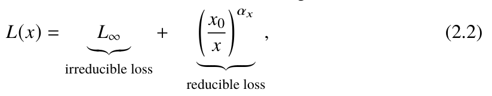
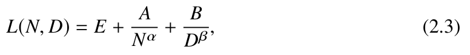
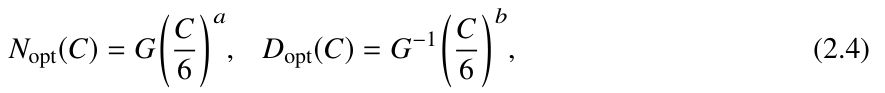
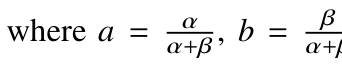
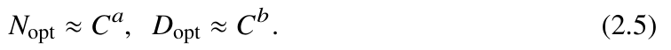
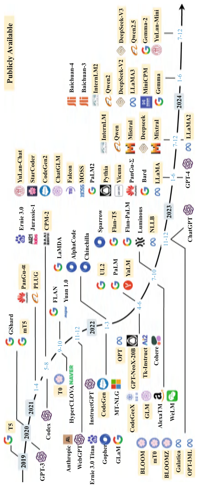
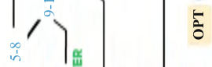
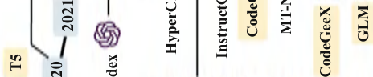
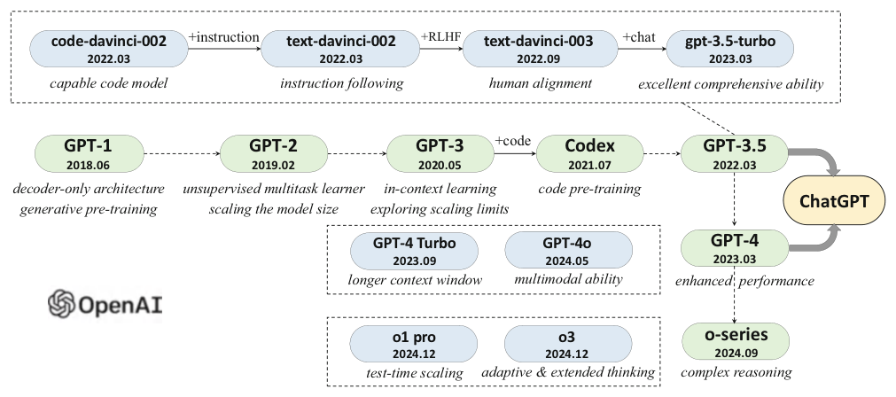

Chapter 2Background
Abstract This chapter offers a foundational overview of large language models (LLMs), focusing on their construction, scaling laws, emergent abilities, and the technical evolution of the GPT series models. We begin by outlining the two-stage training process of LLMs: pre-training, which establishes the model’s foundational capabilities through unsupervised learning on vast text corpora, and post-training, which fine-tunes the model using instruction tuning and human alignment techniques to enhance task-specific performance and ensure alignment with human values.
The chapter then explores scaling laws, which quantify the relationship between model performance and factors including parameter size, data scale, and computational resources. Two key scaling laws are discussed: the KM scaling law and the Chinchilla scaling law. These laws provide a framework for understanding how scaling impacts model capabilities and guide the development of more efficient and effective LLMs.
Subsequently, we examine emergent abilities such as in-context learning, instruction following, and step-by-step reasoning. The chapter discusses the relationship between emergent abilities and scaling laws, noting that while scaling laws predict smooth performance improvements, emergent abilities often manifest as sudden leaps in task performance, making them harder to anticipate.
Finally, the chapter traces the technical evolution of the GPT series models, from the initial development of GPT-1 and GPT-2 to the recent reasoning models o1 and o3. This section provides insights into the milestones and innovations that have shaped the development of these influential models.
Large language models (LLMs) refer to large-scale pre-trained language models developed by pre-training on massive unlabeled text data. Currently, there is no precise reference standard for the minimum parameter scale required to define an LLM, but the term typically refers to models with tens of billions, hundreds of billions, or even trillions of parameters. Some works also consider models with billions of parameters pre-
trained on large-scale data (significantly more data than traditional pre-trained models) as LLMs. In this book, LLMs generally refer to language models that have been developed with large-scale parameters or trained on large-scale datasets. Compared to traditional language models, the construction of LLMs involves more complex training methods, enabling them to possess powerful natural language understanding and complex task-solving abilities.
This chapter aims to help readers grasp the working principles of LLMs by covering essential background knowledge, including their construction process (Sect. 2.1), scaling laws (Sect. 2.2), emergent abilities (Sect. 2.3), and the development history of the GPT series models (Sect. 2.4).
2.1Construction Process of LLMs#
Large language models (LLMs) refer to large-scale pre-trained language models developed by pre-training on massive unlabeled text data. Currently, there is no precise reference standard for the minimum parameter scale required to define an LLM, but the term typically refers to models with tens of billions, hundreds of billions, or even trillions of parameters. Some works also consider models with billions of parameters pre-trained on large-scale data (significantly more data than traditional pre-trained models) as LLMs. In this book, LLMs generally refer to language models that have been developed with large-scale parameters or trained on large-scale datasets.
This section offers an overview of the construction process of LLMs, establishing a foundational understanding of their development. Within the machine learning framework, neural networks are functions with specified model structures, and LLMs are neural networks built on Transformer architectures. Consequently, LLMs can be viewed as functions with large-scale parameters, designed to fit these parameters using massive text datasets. Although the training methods employed may differ from those in traditional machine learning models, the fundamental principle remains the same—optimizing model parameters. However, the optimization goals for LLMs are more general; they aim not to address specific types or categories of tasks but to develop a general-purpose model capable of handling various tasks (as illustrated in Fig. 1.2).
Achieving this objective necessitates more sophisticated and nuanced training methods. Broadly speaking, the training process of LLMs can be divided into two main stages: pre-training and post-training. These two stages will be discussed in detail below.
2.1.1Pre-training#
Pre-training refers to the initial training of model parameters using large-scale data that is not specifically related to downstream tasks, effectively establishing an “initial point” for these parameters. This concept was extensively explored in the field of computer vision, where large-scale annotated image datasets such as ImageNet were utilized to initialize vision models. In the field of NLP, an early attempt at pre-training was word2vec [6], which developed word embedding models using unlabeled text corpora. This approach evolved through models such as ELMo [9], BERT [11], and GPT-1 [12], ultimately becoming a foundational technique for the development of LLMs.
Building on the initial GPT-1 model, OpenAI advanced the exploration of pre-training by introducing GPT-2 [15], with the aim of developing a general task solver through large-scale text data pre-training, primarily for NLP tasks. This concept was further expanded with GPT-3, which scaled to 175 billion parameters, marking a significant milestone in model capacity. While early models like BERT employed diverse architectures and training tasks, the success of the GPT series models has established the “decoder architecture + next-word prediction” paradigm as the mainstream approach for developing LLMs. OpenAI’s former chief scientist, Ilya Sutskever, has remarked in interviews that large-scale pre-training effectively compresses world information, creating a model capable of encoding knowledge that can be “decompressed” to solve real-world tasks.
Pre-training LLMs involves the extensive collection and meticulous preprocessing of vast amounts of texts to ensure high data quality. The cleaned data are then tokenized, organized into batches, and used in distributed training to optimize the model. Since the foundational capabilities of LLMs stem from their pre-training data, the quality and diversity of the data collection and cleaning processes have a significant impact on model performance. Therefore, it is essential for developers to focus on gathering high-quality, diverse data and implementing rigorous data cleaning procedures.
Currently, open-source models are often trained on datasets comprising trillions of tokens, with the data scale gradually increasing. Training such large models requires substantial computational resources. For instance, a model with tens of billions of parameters typically necessitates a computing cluster of at least a hundred GPUs (e.g.,
A100) for parallel training over several months, depending on the specific hardware. Models with hundreds of billions of parameters require a cluster with thousands or even tens of thousands of GPUs, consuming vast amounts of computational power.
Although the pre-training process might appear straightforward at first glance, its implementation demands extensive expertise. Developers need to understand intricate details and address anomalies effectively to prevent setbacks once large-scale training begins, thereby minimizing resource wastage and increasing the likelihood of success. Although building LLMs is often considered a compute-intensive task, the expertise of technical professionals is crucial for successful pre-training. Ultimately, the skills of the core training team determine the model’s quality and performance-talent is the most important factor.
2.1.2Post-training#
After large-scale data pre-training, a language model possesses strong foundational capabilities. However, due to the limited form of pre-training tasks, these models are more suited to general tasks such as text completion than to addressing a variety of real-world problems. Although methods like in-context learning can adapt the model for specific tasks, its ability to understand and solve problems remains relatively limited. A simple analogy illustrates this: a model after pre-training is akin to a recent graduate entering the workforce. While they have studied a broad range of general subjects, they still need to refine their skills for a specific job role. Consequently, employers typically organize tailored training sessions.
Similarly, after pre-training, an LLM must undergo fine-tuning and alignment to improve its ability to handle specific tasks and address human needs. The most commonly used fine-tuning technique is instruction tuning, also known as supervised fine-tuning (SFT), where the model is trained using instruction-formatted data. This method enhances the model’s ability to follow natural language instructions. Essentially, this training process can be regarded as imitation learning, as the model learns by mimicking a provided example or demonstration of how to solve a task. While instruction tuning can stimulate the model’s task-solving abilities, it typically does not impart new knowledge beyond what was acquired during pre-training. Instead, it elicits and leverages the
model’s inherent capabilities. Instead, it draws upon the model’s inherent capabilities. Compared to pre-training, instruction tuning requires significantly less data. Typically, hundreds of thousands to millions of instruction instances suffice to effectively enhance the model’s general task-solving capabilities. Some studies even suggest that thousands or tens of thousands of high-quality examples can yield satisfactory results in dialog tasks. Consequently, the computational resources required for instruction tuning are relatively modest. In many cases, a single eight-GPU (e.g., A100) server can complete instruction tuning for a model with tens of billions of parameters in just a few days. As the scale of instruction data increases, more resources would be required. This process can also be further improved by incorporating dialog data to enhance the model’s ability in human–computer interaction.
In addition to enhancing task-solving capabilities, aligning the LLM with human values and expectations—a process known as human alignment—is essential for its successful deployment. OpenAI’s InstructGPT [17] paper, published in early 2022, details methods for aligning language models with human preferences. This process primarily employs reinforcement learning from human feedback (RLHF), where human feedback guides the model’s learning. In the RLHF framework, a reward model that reflects human values is trained by gathering feedback from annotators who rank the various outputs generated by the model. This ranked feedback is used to train the reward model, which subsequently aids in assessing the quality of the model’s outputs.
Since RLHF involves additional models, such as the reward model, it demands more resources than instruction tuning, although still less than pre-training’s computational requirements. To simplify the alignment training process, many researchers are exploring ways to eliminate the need for a reward model or to investigate alternative supervised alignment techniques that can achieve similar effects to reinforcement learning.
After completing both instruction tuning and human alignment, the LLM is equipped with robust language interaction capabilities and can effectively manage a variety of downstream tasks in a question-answering format. Developing such a model requires profound technical insight, extensive training experience, and access to substantial computational resources.
2.2Scaling Laws#
The success of LLMs is largely attributed to the comprehensive exploration and utilization of “scaling.” Although LLMs share a similar Transformer architecture and pre-training methods with early pre-trained language models, their key distinction lies in the large scale of parameters, data, and computing power. By expanding these factors, the capabilities of LLMs far surpass those of smaller models. Notably, the performance enhancements derived from scaling are often more pronounced and direct than those achieved through modifications in architecture or training methodologies. Consequently, the development of a quantitative model to comprehend the effects of scaling is of substantial practical significance.
This section will introduce two common scaling laws for language models and explore their implications on model capacities.
2.2.1KM Scaling Laws#
In 2020, Kaplan et al. [13] (OpenAI researchers) first established a power-law relationship between the performance of neural language models and three key factors: parameter scale (N), data scale (D), and computational power (C). Since the original publication did not explicitly name the proposed scaling laws, this book refers to them using the initials of the two co-first authors. Given a computational budget c, the following basic exponential formulas can be derived to explicate these scaling laws.

where L(·). represents the cross-entropy loss in units of nat.1 Nc., Dc., and Cc. are experimental constant values corresponding to the number of non-embedding parameters, the amount of training data, and the actual computational cost, respectively. For clarity in discussion, the original symbols in the above formulas have been simplified without altering 1A “nat” represents the natural logarithm of the amount of information, with e as the base.
their meaning or interpretation. These three formulas are derived from the model’s performance measured across various data scales (ranging from 22M to 23B tokens), parameter scales (from 768M to 1.5B non-embedding parameters), and computational power scales. The derivation of these formulas relies on several fundamental assumptions, most notably that each factor is analyzed independently of the others. For instance, when the model’s parameter scale is increased, it is assumed that the necessary data and computational resources are proportionally adjusted without any constraints.
As illustrated in Eq. 2.1, there exists a strong dependency between model performance and these three factors, which can be approximately characterized by an exponential relationship. These formulas provide a universal quantitative framework for understanding scaling effects. By applying these general principles, the core issues can be studied from a more fundamental perspective, excluding the interference of other complex factors. For instance, the OpenAI research team discovered that the architecture design of the model does not significantly influence these scaling laws.
To further elucidate the impact of scaling on model performance, the OpenAI team decomposed the loss function into two components [18]: irreducible loss (representing the entropy of the true data distribution) and reducible loss (representing the estimate of the KL divergence between the true distribution and the model’s predicted distribution):

irreducible loss
reducible loss
where x is a placeholder symbol, which can refer to N, D and C in Eq. 2.1. Of the two components, the irreducible loss is determined by the inherent characteristics of the data itself and cannot be reduced by scaling laws or optimization algorithms. In contrast, efforts to optimize model performance can only reduce the reducible loss component.
2.2.2Chinchilla Scaling Law#
In 2022, Hoffmann et al. [19], researchers from DeepMind, proposed an alternative form of scaling law designed to optimize the use of available computational resources during the training of LLMs. By conducting experiments across a broader range of parameter scales (from 70 million to 16 billion parameters) and data scales (from 5
billion to 500 billion tokens), this studied derived the following power-law relationship for model performance:

where E = 1.69, A = 406.4, B = 410.7., α = 0.34. and β = 0.28. Then, by deriving the loss function L(N, D). using the constraint condition C ≈ 6N D., the optimal allocation of parameter scale and data scale, given fixed computational resources, can be determined by the following formula:


α+β., G is the scaling coefficient calculated from A, B, α. and β. Furthermore, researchers [19] found that both the KM scaling law and the Chinchilla scaling law can be approximately represented as resource allocation formulas centered on computational power:

When the computational power C is given, the optimal parameter scale and data scale are determined by the exponential coefficients a and b, respectively. Although the KM scaling law and the Chinchilla scaling law possess similar mathematical forms, they differ in how they allocate resources between parameter scale and data scale. Their coefficients dictate the priority of resource allocation: if a > b., more computational resources should be allocated to increasing the parameter scale; conversely, if b > a., more computational resources should be devoted to expanding the data scale. As computational resources increase, the KM scaling law (a ≈ 0.73., b ≈ 0.27. [19]) tends to allocate a larger budget to the increase of parameter scale rather than to the increase of data scale, while the Chinchilla scaling law advocates for a more balanced increase in both scales (a ≈ 0.46., b ≈ 0.54. [19]). The significance of the Chinchilla scaling law extends beyond offering a specific resource allocation strategy; it formally underscores that previous pre-training efforts may have underestimated the importance of data scale. For example, GPT-3, with its 175 billion parameters, was trained on only 300B tokens—an amount far below the model’s learning capacity. Guided by the Chinchilla scaling law, DeepMind’s team trained the Chinchilla model, which has 70B parameters, on approximately 1.4T tokens.
However, this data-to-parameter ratio (approximately 20 times more data than parameters) has been significantly increased in subsequent research, underscoring that the requirement for training data greatly exceeds earlier scaling law estimates. For example, the LLaMA- 3 model, with 8B parameters, utilized 15T tokens for training, demonstrating that even relatively small models have exhibited notable improvements when exposed to large-scale pre-training data. Given the high scalability of the Transformer architecture with respect to data, most open-source models have yet to reach the point of “data saturation”, as additional data can still further enhance model performance.
2.2.3Discussion on Scaling Laws#
To deepen the reader’s understanding of scaling laws, we offer a detailed discussion on predictable scaling and task-level predictability.
Predictable Scaling
In practice, scaling laws can be applied to monitor the training of LLMs by facilitating reliable performance estimation with limited computational resources—a concept referred to as predictable scaling [24]. Specifically, scaling laws can improve the effectiveness of training large models in several ways.
First, training LLMs requires substantial computational resources to evaluate the impact of various techniques or configurations. An effective strategy is to derive insights from smaller models and apply these insights to the training of larger models, thereby reducing experimental costs. For example, training smaller proxy models can help in identifying the optimal ratio for the pre-training data mix [28].
Second, given the lengthy training cycles required for LLMs, scaling laws can serve as a crucial tool for monitoring training progress and detecting potential anomalies early, particularly when there are fluctuations in training loss. Scaling laws typically exhibit an exponential pattern, indicating that diminishing returns may occur as scale increases; in other words, the performance gains from further expansion progressively diminish and may eventually plateau. However, according to a study by the OpenAI team [18], even as one approaches the point of diminishing returns—near the irreducible model loss described in Eq. 2.2—the quality of model representation can continue to improve with
increased scale. This finding underscores the importance of training large models to enhance performance on downstream tasks.
As model scales increase, a potential issue is the scarcity of high-quality training data. Public text data resources are finite and could soon be exhausted. Therefore, it is crucial to study scaling laws under data-limited conditions. In such scenarios, techniques such as data repetition or data synthesis may help to alleviate data scarcity.
Task-Level Predictability
Most existing research on scaling laws focuses on language modeling loss, specifically the average cross-entropy loss for predicting the next token [13]. This metric provides a smooth, high-level measurement of a model’s overall performance. However, in practice, it is essential to consider how scaling laws affect a model’s performance on real-world tasks.
A fundamental question in connecting scaling laws to task performance is whether reductions in language modeling loss genuinely lead to improved task performance [18]. Generally, models with lower language modeling loss tend to outperform on downstream tasks. However, a decrease in language modeling loss does not always correspond to improved task performance. In some cases, an “inverse scaling” phenomenon may even occur, where increasing model parameters results in a decline in performance on certain tasks [29]. Exploring scalability at the task level is inherently challenging, as it depends on various task-specific factors, such as performance metrics and task difficulty. According to the GPT-4 report [24], some task abilities, like coding proficiency, can be reliably predicted by scaling laws, whereas many others cannot. Moreover, certain key abilities, such as in-context learning [20], only emerge when the model reaches a specific scale and are not predictable based on scaling laws alone. These topics will be further discussed in the following chapters.
2.3Emergent Abilities#
In existing literature [14], the emergent abilities of LLMs are defined as “abilities that do not exist in small models but appear in large models.” Specifically, these abilities refer to instances where, once a model reaches a certain size, its performance on specific
tasks suddenly improves dramatically, far exceeding random-level performance. This pattern of performance emergence resembles the phase transition phenomenon observed in physics, though a theoretical explanation for it is still lacking. The concept of emergent abilities underscores the unique strengths of LLMs and distinguishes them from traditional pre-trained language models. In this book, emergent abilities are used to refer to the representative capabilities of LLMs, rather than focusing on whether these abilities exist in smaller models. In the following, we will introduce three representative emergent abilities and discuss the potential relationships between these abilities and scaling laws.
2.3.1Representative Emergent Abilities#
In this subsection, we mainly focus on three typical abilities of LLMs, namely in-context learning, instruction following, and step-by-step reasoning. The details are as follows.
- In-context learning (ICL). The concept of in-context learning was formally introduced in the GPT-3 paper [20]. This approach involves providing the language model with natural language instructions and task examples (known as demonstrations), within the prompt. This enables the model to generate the expected output for a given test sample without requiring explicit gradient updates. Among the GPT series models, GPT-3 with 175B parameters demonstrates strong in-context learning capabilities, whereas the earlier GPT-1 and GPT-2 models do not exhibit this ability. Additionally, the effectiveness of in-context learning is task-dependent. For example, the GPT-3 model with 13B parameters performs well on arithmetic tasks, such as adding and subtracting three-digit numbers, but does not excel in Persian question-answering tasks, even in its larger 175B parameter version [14].
- Instruction following. Instruction following refers to the ability to perform tasks based on natural language instructions [17, 30, 31]. To acquire this ability, models typically undergo fine-tuning using a multi-task dataset where tasks are described in natural language. This process, known as instruction tuning or supervised fine-tuning, enables LLMs to complete new tasks based on task instructions alone—without requiring explicit examples—thereby enhancing their generalization ability. Compared to in-context learning, instruction following ability is generally easier to acquire, although the ultimate task performance still depends on the model’s capabilities and the complexity of the task. Researchers [32] evaluated the task performance of FLAN-PaLM models with 8B, 62B, and 540B parameters after instruction tuning. Their experiments demonstrated that when the parameter scale reached 62B or higher, the models exhibited strong zero-shot reasoning capabilities on the BBH evaluation benchmark, which includes 23 complex reasoning tasks. Even for relatively small models, instruction-following ability can be developed through fine-tuning with high-quality instruction data, although such models are typically suited to simpler tasks, such as text summarization [33].
- Step-by-step reasoning. For smaller language models, solving complex tasks that involve multiple reasoning steps (such as math word problems) is generally challenging. However, LLMs can employ the chain-of-thought (CoT) prompting strategy [21] to enhance their reasoning capabilities. This strategy involves incorporating task-related intermediate reasoning steps in prompts to assist the model in solving complex tasks, thereby generating more reliable answers. In the original CoT paper [21], researchers found that CoT prompts improved performance on an arithmetic reasoning benchmark for PaLM models with 62B and 540B parameters, although the 8B parameter model did not benefit significantly. Furthermore, the performance enhancement from CoT prompting was more pronounced in the 540B PaLM model. The impact of CoT prompting also varies across tasks; for instance, PaLM models with CoT prompting showed differing levels of improvement across three datasets: GSM8K > MAWPS > SVAMP. CoT prompts are particularly effective for complex math problems, making the CoT ability a key indicator of strong capacities in LLMs. Generally, it is difficult to define a universal critical scale (i.e., the minimum parameter size) at which key abilities emerge in LLMs, as the emergence of these abilities depends on various factors, including task settings. Recent research indicates that, with high-quality pre-training and instruction tuning, even relatively small models can exhibit some degree of the three key abilities mentioned above. As the data scale expands and data quality improves, the minimum parameter size required for these abilities continues to decrease.
2.3.2Relationship Between Emergent Abilities and Scaling Laws#
Scaling laws and emergent capabilities provide two distinct perspectives on the advantages of large models over smaller ones, yet they describe different scaling effects. On the one hand, scaling laws use language modeling loss to assess a model’s overall performance, demonstrating a smooth and predictable improvement trend with scaling. However, the exponential nature of these laws indicates the potential for diminishing returns as the model size increases. On the other hand, emergent capabilities focus on task performance, typically exhibiting a more dramatic leap in performance as the model scale expands. This leap is more challenging to predict, but once it occurs, it signifies a substantial enhancement in task performance. Given that scaling laws and emergent capabilities reflect different trends in model performance—continuous improvement versus sudden leaps—they may sometimes lead to conflicting findings and conclusions.
The concept of emergent capabilities itself remains controversial. One potential explanation is that they may partly arise from specific task settings [34, 35]. Existing evaluation settings often use discontinuous metrics (such as pass rates for synthesized code) and typically involve relatively limited model scales (e.g., 8B, 62B, and 540B parameters for PaLM models). In such instances, the evaluation results may exhibit abrupt changes in task performance, likely creating the illusion of emergent capabilities. If evaluation metrics were adjusted to be more continuous, or if more fine-grained model scales were considered, the sudden “leaps” in task performance might become less pronounced or even vanish. This suggests that the “emergence” of capabilities could be an artifact of the evaluation process rather than an inherent phenomenon of LLMs. However, it is important to note that, in practical applications, the overall correctness of a model’s output often holds more significance than its performance in language modeling as for developing scaling laws. Users typically perceive model performance in a discontinuous manner, prioritizing the correctness of the output. For instance, users would prefer a model that produces code passing all test cases over one that generates code with fewer errors but still fails in certain scenarios.
The concept of emergent abilities is related, to some extent, to research on “grokking,” a term used to describe a phenomenon in machine learning where a model’s performance suddenly shifts from random to highly generalized [36]. This shift in model behavior
resembles the emergence of new capabilities at certain scales in language models. Further theoretical exploration is necessary to better understand the underlying mechanisms of such emergent phenomena. In simpler terms, the relationship between scaling laws and emergent capabilities can be compared to the development of language in children. Early language development (especially in infants) progresses in stages, with “emergent phenomena” occurring as children transition from one stage to another. For example, a child might first learn to say simple words and later progress to forming basic sentences. While children are continually growing, the improvement in their language abilities is often non-smooth and unstable. This discontinuous growth can be surprising to parents, just as the emergence of new capabilities in LLMs can be surprising to researchers.
2.4Technical Evolution of the GPT Series Models#
At the end of November 2022, OpenAI launched ChatGPT, an online chat system powered by LLMs. Due to its exceptional human–computer interaction capabilities and task-solving skills, ChatGPT drew widespread global attention to LLMs upon its release, significantly contributing to the development of AI technology (Fig. 2.1).
As the GPT series models have been at the forefront of this technological innovation, this section will review the development history of the GPT models and highlight the key technological advancements within them, offering valuable insights into the progression of LLMs. The fundamental motivation behind the GPT series models is to perform unsupervised pre-training on extensive text corpora, effectively compressing vast amounts of world knowledge into an autoregressive decoder-only Transformer model. The two key elements of this approach are training a Transformer language model capable of accurately predicting the next token and scaling up both the model size and the amount of pre-training data.
Figure 2.2 presents a schematic diagram illustrating the technical evolution of the GPT series of models, primarily based on information from OpenAI’s research papers, blog posts, and official API documentation. In the diagram, solid lines represent public evidence of evolutionary relationships between models (e.g., official statements asserting that a new model was developed based on a prior model), whereas dashed lines denote less certain or weaker evolutionary connections. To date, OpenAI’s research and development




of LLMs can be broadly categorized into the following stages: the early exploration stage, the scale expansion stage, the capability enhancement stage, the performance leap stage, and inference-time scaling stage. A detailed explanation of these four stages is as follows.
2.4.1Early Exploration#
According to an interview with Ilya Sutskever, cofounder and former chief scientist of OpenAI,2 OpenAI initially aimed to develop language models based on recurrent neural networks [37]. However, these networks had significant limitations in both model capabilities and large-scale training. The introduction of the Transformer model, which attracted significant attention, led the OpenAI team to shift its focus to this innovative architecture. This timely transition led to the development and launch of the initial GPT models: GPT-1 [12] and GPT-2 [15]. These pioneering models laid the foundation for the development of more advanced iterations, including GPT-3 and GPT-4.
- GPT-1. In 2017, following the release of the Transformer model, OpenAI quickly recognized that this neural network architecture could vastly outperform traditional sequence models and potentially revolutionize the development of large-scale neural networks. The team soon commenced the development of language models based on the Transformer architecture, and in 2018, they released the first GPT model, known as GPT-1. The acronym “GPT” stands for generative pre-training. GPT-1 was built upon a generative, decoder-only Transformer architecture, establishing the foundational structure for the 2https://hackernoon.com/an-interview-with-ilya-sutskever-co-founder-of-openai. GPT series models and introducing the pre-training approach based on autoregressive text generation, specifically predicting the next word in a sequence. Given the relatively small parameter scale of GPT-1 at the time, the model was limited in its ability to effectively solve general tasks. To address this limitation, OpenAI adopted a combined approach of unsupervised pre-training followed by supervised fine-tuning. Released around the same time period as GPT-1, the BERT model also utilized pre-training based on the Transformer architecture. However, BERT primarily focused on natural language understanding (NLU) tasks and employed only the encoder component of the Transformer. BERT achieved notable performance improvements across various NLU tasks and quickly be-came a highly influential “star model” in the field, inspiring significant academic research aimed at refining and expanding the model. While GPT-1’s parameter scale (approximately 110M parameters) was comparable to that of the small-scale BERT-Base model, it did not achieve significantly better performance on public evaluation datasets compared to contemporaneous models and thus did not garner as much academic attention.
- GPT-2. GPT-2 built on the architecture of GPT-1, expanding the parameter scale to 1.5B and using the large-scale web dataset WebText for pre-training. Unlike GPT- 1, GPT-2 aimed to improve model performance by increasing the parameter scale and sought to eliminate the need for task-specific fine-tuning. This point was emphasized in the GPT-2 paper [15], which proposed using unsupervised pre-training to directly solve various downstream tasks through prompts, thereby eliminating the need for labeled data in explicit model fine-tuning. Formally, multi-task learning can be represented by the probability expression: P(output|input, task)., where the model predicts the output based on task and input information. To establish a general multi-task learning framework, language models describe input, output, and task information in the unified format of natural language. This approach views task solving as a text generation process aimed at producing task-specific plans or answers. The OpenAI team explained in the GPT- 2 paper why unsupervised pre-training can achieve strong performance on downstream tasks: “Since the supervised objective is the same as the unsupervised objective but only evaluated on a subset of the sequence, the global minimum of the unsupervised objective is also the global minimum of the supervised objective” [15]. An intuitive interpretation of this statement is that language models treat each NLP task as a text completion process, described as training on a subset of world text. Therefore, if an unsupervised language model can adequately recover the entire world text after training, it should be able to solve various specific tasks. This perspective is echoed in early discussions from the GPT-2 paper and in Ilya Sutskever’s views expressed in an interview: “What neural networks learn is some kind of representation in the process of generating text, and the text generated by these models is actually a projection of the real world... The more accurate the (language model) predicts the next word, the higher the fidelity (world knowledge recovery), and the higher the resolution obtained in this process...”.3
2.4.2Scale Expansion#
Despite the original goal of GPT-2 to be an unsupervised multitask learner, its performance still lagged behind that of supervised fine-tuning methods. Building on GPT-2, GPT-3 significantly increased the model’s parameter scale, demonstrating greater generality in downstream tasks—especially through the use of in-context learning techniques. This laid the foundation for subsequent advancements in developing even more powerful models.
- GPT-3. OpenAI released the GPT-3 model in 2020, expanding the model’s parameters to a scale of 175B. Compared to GPT-2, GPT-3 increased the parameter scale by more than 100 times, representing an ambitious attempt at parameter scaling at the time. Notably, two influential papers on scaling laws from OpenAI [13, 18] were both published in 2020, suggesting that by the time GPT-3 started training, OpenAI had already conducted extensive exploration of the scaling effects. In the GPT-3 paper, OpenAI formally introduced the concept of “in-context learning (ICL),” enabling LLMs to solve various tasks through few-shot learning. With ICL, language models can understand new tasks described in natural language and adapt to downstream tasks without requiring fine-tuning. This learning paradigm offers a unified approach to the training and utilization of LLMs: pre-training involves predicting subsequent text sequences given specific contextual conditions, while model utilization focuses on inferring task answers from task descriptions and example data. GPT-3 not only demonstrated excellent performance on a variety of NLP tasks but also showed promising abilities for tasks requiring complex rea-
soning or domain adaptation. Although the GPT-3 paper did not explicitly describe ICL as an emergent ability, the experiments suggest that ICL significantly enhances performance for large models, with comparatively limited gains for smaller models (see Figure 1.2 in the GPT-3 paper [20]). Overall, GPT-3 can be regarded as a key milestone in the evolution from pre-trained language models to LLMs. It evidences that scaling up neural networks to extremely large sizes can lead to substantial performance improvements and establishes the task-solving paradigm based on prompt learning methods as a core technology.
2.4.3Capability Enhancement#
Due to its performance enhancements, GPT-3 has become a fundamental basis for OpenAI’s subsequent development of language models. Based on publicly disclosed information, OpenAI has explored two main approaches to enhance the GPT-3 model: code data training and human alignment.
code-davinci-002- Code data training. The GPT-3 model’s ability to handle complex reasoning tasks, such as solving programming and mathematical problems, was still limited. To address this issue, OpenAI launched Codex [38] in July 2021, a model fine-tuned on a large dataset of GitHub code. Experimental results show that Codex can solve challenging programming problems and significantly improve the model’s ability to tackle mathematical tasks [39]. Additionally, in January 2022, OpenAI released a contrastive learning method for training text and code embeddings [40], which demonstrated improvements across various tasks, including linear probe classification, text search, and code search. According to the official API information from OpenAI, the GPT-3.5 model, developed that training on code can substantially enhance the comprehensive reasoning abilities of the language model, particularly for code-related tasks. Another potential implication is the expansion of pre-training data to encompass a more diverse range of sources beyond just natural language documents.
- Human alignment. OpenAI’s exploration of human alignment in research can be traced back to 2017, or even earlier. In a blog post titled “Learning from human preferences”,4 the OpenAI research team introduced a project employing reinforcement
learning algorithms to enhance model performance based on human preference data [41]. Shortly after publishing this work, in July 2017, the team proposed an improved reinforcement learning algorithm known as proximal policy optimization (PPO) [42], which has since become the preferred algorithm used by OpenAI for human alignment tasks. In 2020, they further applied the human alignment algorithm to NLP tasks and trained a text summarization model that could be optimized based on human preferences [43]. Building on these efforts, in January 2022, OpenAI officially launched InstructGPT [17], representing a significant advancement in aligning LLMs with human instructions. This initiative formally introduced the reinforcement learning algorithm based on human feedback (RLHF). The RLHF algorithm plays a crucial role in mitigating harmful content generation, an essential consideration for the safe deployment of LLMs in real-world applications.
As a result of these initiatives, OpenAI introduced the GPT-3.5 model, which offers enhanced capabilities compared to the GPT-3 model.
2.4.4Performance Leap#
After nearly 5 years of research and development, OpenAI released a series of important technical upgrades at the end of 2022. Among the notable models and APIs introduced were ChatGPT, GPT-4, GPT-4V, GPT-4 Turbo, and GPT-4o, which substantially enhanced the capabilities of existing AI systems and represented significant milestones in the advancement of LLMs.
- ChatGPT. In November 2022, OpenAI unveiled ChatGPT, an online chat system built upon the GPT model. According to an official OpenAI blog post, ChatGPT employed similar training techniques developed for InstructGPT, with a primary focus on enhancing its chat capabilities. During the data collection process, ChatGPT integrated human-generated conversation data with data from the InstructGPT training process, which was reformatted into a conversational format for model training. ChatGPT demonstrated remarkable performance in human-computer conversation tasks, showcasing a broad scope of knowledge, the ability to solve complex problems, multi-turn dialog capabilities, and alignment with human values and preferences. Subsequent updates introduced plugin support to expand its functionality through integration with existing tools and applications, surpassing the capabilities of traditional human-computer dialog systems. Upon its release, ChatGPT has attracted significant public attention and had a substantial impact on the advancement of AI technology.
- GPT-4. Following the release of ChatGPT, OpenAI introduced GPT-4 in March 2023, expanding the capabilities of GPT models from handling solely text to accommodating both text and images. Notably, GPT-4 demonstrated significantly enhanced performance in solving complex tasks compared to GPT-3.5, achieving excellent results in a series of exams designed to assess human-level performance. After GPT-4’s release, a Microsoft research team conducted performance tests on large-scale, human-generated tasks [16], leading the authors to suggest that GPT-4 might signify the beginning of AGI. For safe deployment, GPT-4 underwent 6 months of iterative alignment, incorporating the safety reward signal into its reinforcement learning process based on human feedback. This enhancement improved the safety of its responses to malicious or provocative queries. In the GPT-4 technical report [24], OpenAI highlighted the importance of developing language models safely and implemented various intervention strategies to mitigate issues such as hallucinations, privacy breaches, and other risks. These efforts included the red teaming method [44] to reduce the generation of harmful or toxic content. Furthermore, GPT-4 established a scalable optimization infrastructure and implemented a predictable training approach that reliably forecasts the model’s final performance based on early training performance.
- GPT-4V and GPT-4 Turbo. Building on the initial release of GPT-4, OpenAI introduced GPT-4V in September 2023, with a focus on the safe deployment of GPT-4’s visual capabilities. In the GPT-4V’s system card [45], OpenAI discussed various risk assessment methods and mitigation strategies related to visual input. GPT-4V demonstrated robust visual capabilities and effective task-solving abilities across a range of application scenarios. Later, in November 2023, OpenAI unveiled an upgraded version of GPT-4 at the first developer conference, known as GPT-4 Turbo. This model incorporated several technical improvements: it surpassed GPT-4 in overall performance, expanded its knowledge scope with data up to April 2023, supported context windows of up to 128K tokens, optimized model performance for cost-effectiveness, and introduced new functionalities such as function call and reproducible output. Additionally, OpenAI launched the Assistants API to improve the development efficiency of AI-driven assistants. This API enables developers to quickly create intelligent assistants tailored to specific tasks by leveraging specialized instructions, external knowledge, and diverse tools.
- GPT-4o. GPT-4o, with the “o” standing for “omni,” significantly boosts the human–computer interaction capabilities of GPT models. It supports any combination of text, audio, images, and video as input, generating output in the form of text, audio, and images. As described in the official documentation, GPT-4o is an end-to-end trained multimodal language model. Compared to previous models, GPT-4o excels particularly in visual and audio understanding achieving a comparable response time to humans. Previously, GPT models had to convert audio data into text for subsequent processing, which was inefficient and often missed key elements like tone of voice, background noise, and speaker-specific characteristics. GPT-4o addresses these issues with an end-to-end training method, allowing for more efficient processing of multimodal data. In terms of text processing, GPT-4o performs similarly to GPT-4 Turbo on English text and code, but it demonstrates significant improvement in handling non-English text. These technical upgrades enhance the GPT model’s task performance, broaden its capability range, and contribute to the expanding ecosystem of large model applications.
2.4.5Test-Time Scaling#
Scaling has been a critical success factor for the GPT series models, which has been thoroughly explored to develop larger, more powerful language models for OpenAI. While past efforts at OpenAI primarily focused on train-time scaling, they have begun investigating test-time scaling (a.k.a., inference-time scaling), resulting in the release of the o-series models.
Notes
- 3 3https://lifearchitect.ai/ilya/.
- 4 4https://openai.com/research/learning-from-human-preferences.